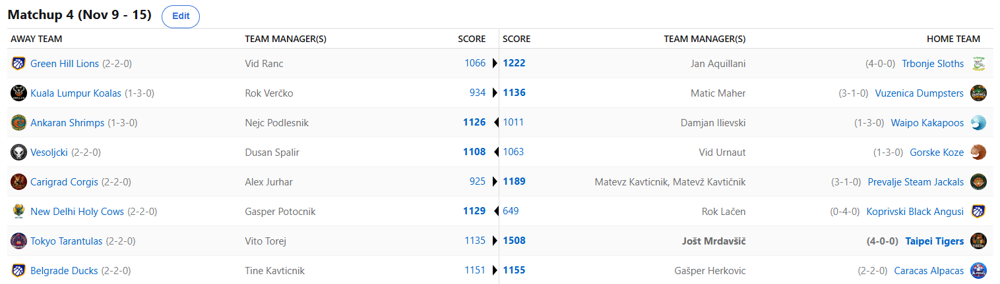
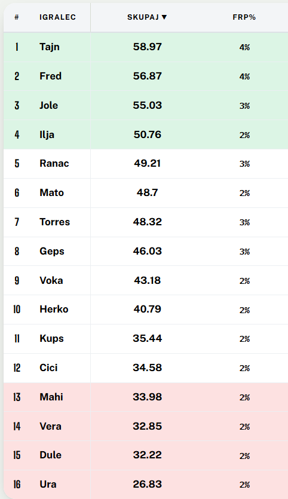
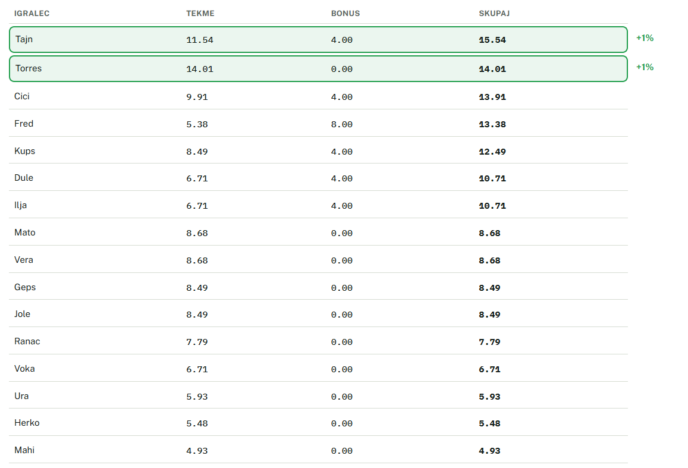
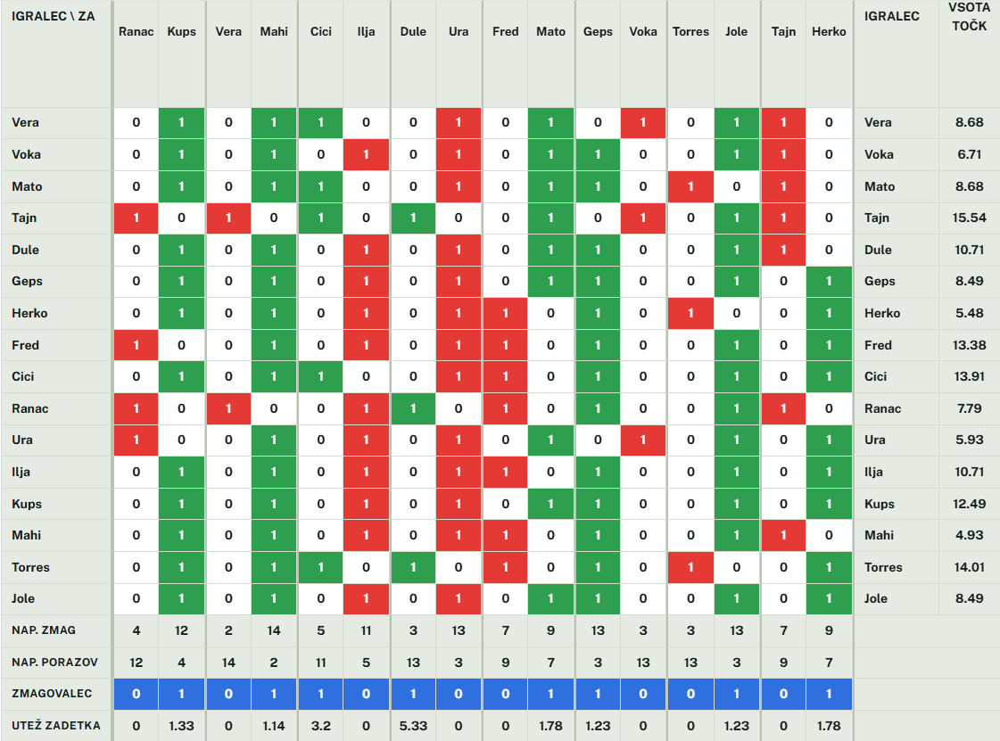
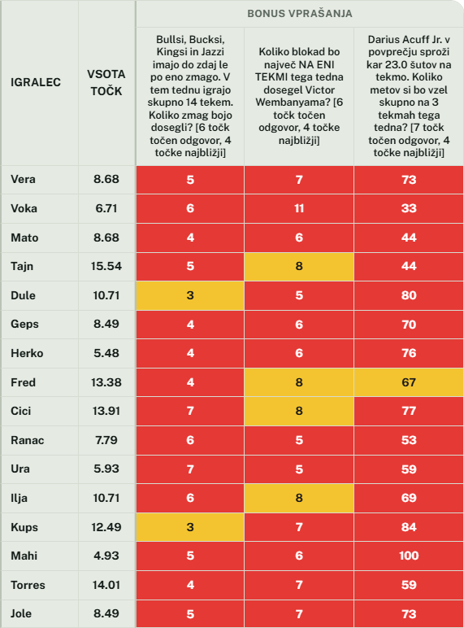
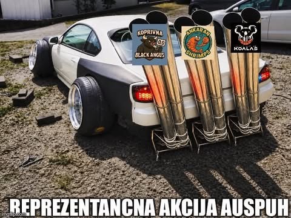
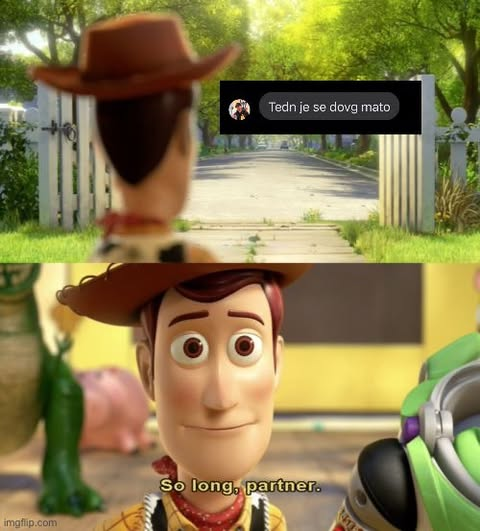
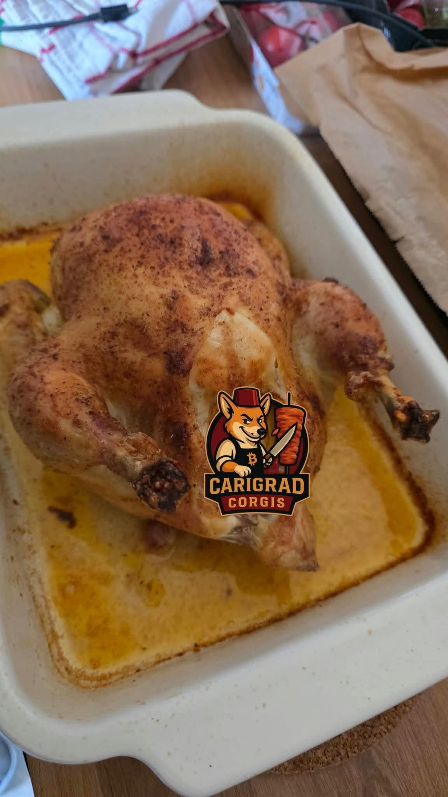

MATCHUP 4

Recap: MATCHUP 4
Po četrtem krogu nam ostajajo le še 3 ekipe, ki imajo v enem izmed W/L stolpcev še ničlo. Zabeležili smo drugo najvišjo
razliko med najboljšim in najslabšim scorom tedna v zgodovini, ko je Lačen s pičlimi 649 točkami za najboljšimi Tigersi
zaostal za 859 točk. 859! Si pa bomo vendarle ta teden bolj zapomnili po tem, da je bil Hinko izvoljen v občinski svet.
Ko smo ravno pri hitrih in drznih, ne moremo mimo tega, da še enkrat pokomentiramo obupno slabe Koprivske Black Anguse. Odsotnosti Caleba Wilsona in
Evana Mobleyja sta sicer soliden izgovor, pa vendar v oči bode dejstvo, da so Angusi samo v enem dnevu zabeležili čez 100 točk?? Vokyju zdaj, čeprav
šele zaključujemo prvo tretjino rednega dela, že pošteno teče voda v grlo, v kolikor se želi izogniti gajbi na pikniku. Ima Samo še kakšnega asa v rokavu,
ali pa bo Voki ponovno posegel po kakšnih bogatih ponudba na tržnici? Dobesedno free win je z odprtimi rokami sprejel Geps, ki sicer tudi ni blestel, je pa
vendarle z 2-2 scorom trdno na sredini lestvice.
Od najmanj zanimivega, pa pojdimo k najbolj zanimivemu dvoboju. V infarktni končnici se je zmage razveselil Herko, ki je v prav zadnjih tekmah
tedna uspel nadoknaditi 50 točk prednosti, ki jih je še ob polnoči imel Tajn. To pa ni edini clutch podvig Gašperja, ki je tudi s pravilno odgovorjenimi
8 trditvami v soboto pokazal mirne živce in si tedaj uspel zagotoviti zmago na kvizu v ŠTObaru. Ledena kri g. Herkoviča in uspešen vikend. Tajn se lahko
vsaj tolaži z zmago v game7, kjer ga je sicer kerijal Tejo, kot smo zdaj že vajeni. Je pa Tine somehow prvi na lestvici predictionov. To je šele
svojevrsten čudež!
Ko omenimo besedico »čudež«, nikakor ne moremo mimo Maherja na tretjem mestu lestvice. Človek po 4 tednih še nikoli ni imel boljšega izkupička kot 2-2 v
davni sezoni 2020/21. Od tedaj je kar 3x začel z 0-4, 2x pa z 1-3. Letos pa HARANJE in 3 zmage v štirih tednih. Očitno so bili klovni kar nekako zakleti
in zdaj, ko so se pretvorili v smetkante, ironično niso več trash. Za razliko od njihov tokratnih nasprotnikov, kualalumpurških Koal. Slednji že omenjajo
izbris aplikacije in obupavajo nad trenutno situaciju v moštvu. Pičlih 934 točk seveda ni bilo dovolj za zmago, razen če tekmuješ proti Lačnu seveda.
Teden pavze od Trsta in lenih Italijanov pa bo obliž na rano za našega Verčkija.
Bo pa Rokov naslednji nasprotnik gospod 2deci, Vid Urnaut. V tem avspuharskem obračunu dveh 1-3 ekip se nam obeta zanimiv dvoboj in skoraj bi si upali
trditi, da bo napeto vse do konca. No, saj tega je Vid že vajen, tudi tokrat je imel šanse vse do konca, a na koncu so vendarle prevladale izkušnje
Špalirja, ki je uspel ohraniti minimalno prednost in s tem zabeležil 2. zmago. Glede na obete in power rankinge, je Dušan kar solidno otvoril sezono
in zaenkrat ga spremlja sreča, kajti ob dejstvu, da je zgolj 1x presegel mejo 900 točk, sta 2 zmagi vsekakor dober izkupiček.
Evforija pa je izbruhnila na Sv. Danijelu, kjer domujejo Trbonjski Lenivci. Nič kaj leni niso v prvih 4 krogih, kjer imajo prav toliko zmag. Jan je z
drugim scorom tedna odpravil Ranca in njegove Levčke. Nič kaj niso rjoveli ta teden in Kups je bil trdno na voznikovem sedežu od začetka do konca in se
utrdil na drugem mestu lestvice. Ga pa tokrat čaka najtežja možna naloga – Taipei Tigersi!
V tem nespornem derbiju kola, med prvim in drugim moštvom lige, ki sta hkrati dosegli dva najboljša rezultata 4. kroga, bo Jole lovil že kar 18.
zaporedno zmago. Tudi Vito ni imel za sirov burek proti razpoloženim Tigrom, ki raztrgajo vsak plen na njihovi poti. 1508 točk je kakopak tudi najboljši
tedenski izkupiček in Jošt ima zdaj virtualno v rokah tudi tistih 10€ nagrade. Neverjetni Luka Dončič, ki je definitivno na MVP runu si je oprtal moštvo
na ramena, ampak ima pa pri Tigersih vsekakor več pomoči kot pri Lakersih, lol. Bo Kups vendarle lahko tisti, ki ustavi ta izjemen zmagoviti pohod?
Zadnji poraz Tigrov ima res dolgo brado, nazadnje so izgubili davnega decembra 2025, ko je bil bolj posran KokicaMajster Jurhar.
Zmaga Shrimpov je tudi prvovrstno presenečenje. Cicko se je rešil zadnjega mesta in se uspešno lotil pohoda v varno, ne-gajbarsko cono. Je slepa kura
zrno našla, ali pa je za impulzivnega stratega z obale to vendarle začetek nove, uspešnejše dobe? Čeprav je še zgodaj, si je Nejc tudi priboril
tie-breaker proti Iljanu, ki bi utegnil odigrati pomembno vlogo, v kolikor se nobeden izmed omenjenih managerjev ne uspe spraviti višje po lestvici.
1000 točk je sicer zbral tudi Damjan, ampak Kakapojem je vendarle precej zmanjkalo za novo zmago. Kot zanimivost, Waipo med drugim pomeni tudi »babica«,
bolj natančno materina mama v kitajščini.
Za konec pa smo si seveda pustili težko pričakovani obračun prve in druge goflje lige. Z lahkoto je slavila prva, Matevž je namreč rutinirano odpihnil
Aleksa in se nahaja na visokem 4. mestu. Tudi njim je očitno selitev dobro dela in po bolečem porazu na četrtkovi rekreaciji, si je Kavt zrihtal dobro
tolažbo. Seveda ni manjkalo niti memov, ki jih vedno vsi pogrešamo, kadar Matonu fantasy ne gre dobro od rok, pogledate pa si jih lahko v spodnjem
spoilerju. Fred očitno tudi letos ni resna konurenca? Ali pa bo vendarle poskušal prevetriti svojo zasedbo in uspel prebuditi Buzelisa, ter se resno
vmešati v boj za najvišja mesta?
Tako, zaključen je 4. recap sezone in komaj že čakamo kaj nas čaka v petem! Vsekakor bo večina oči uprtih v veliki derbi na vrhu lestvice, ko se bosta
za prvo mesto, tiebreaker in potencialno velik korak proti BYE-ju udarila Kups in Jole. Prvo zmago bodo Angusi lovili proti Špalirju, videli bomo tudi
dvoboj za najboljšega Gašperja in pa predvidevamo da, ponovno memov-poln obračun med Shrimpi in Šakali.
Nikakor ne pozabite na predictione in srečno!
Predictions
Lestvica

Točke v krogu

Matchups

Bonusi

Best memes
Avspuharji

So long, partner!

Corgis
